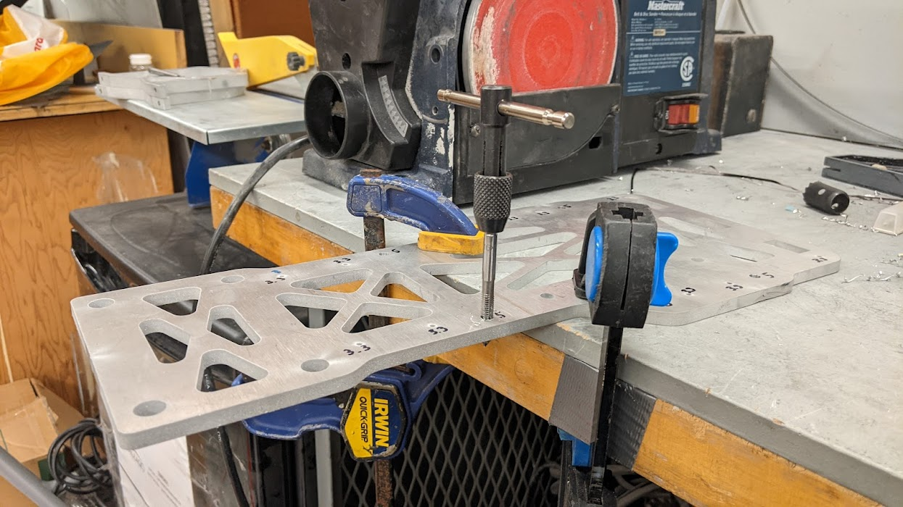
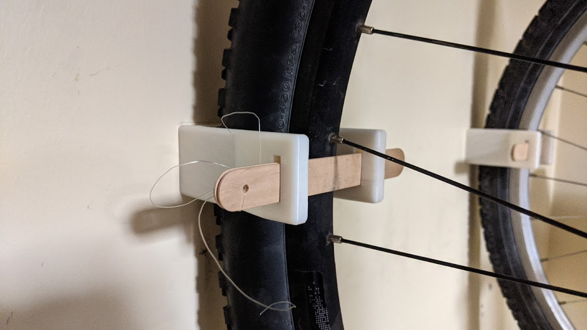
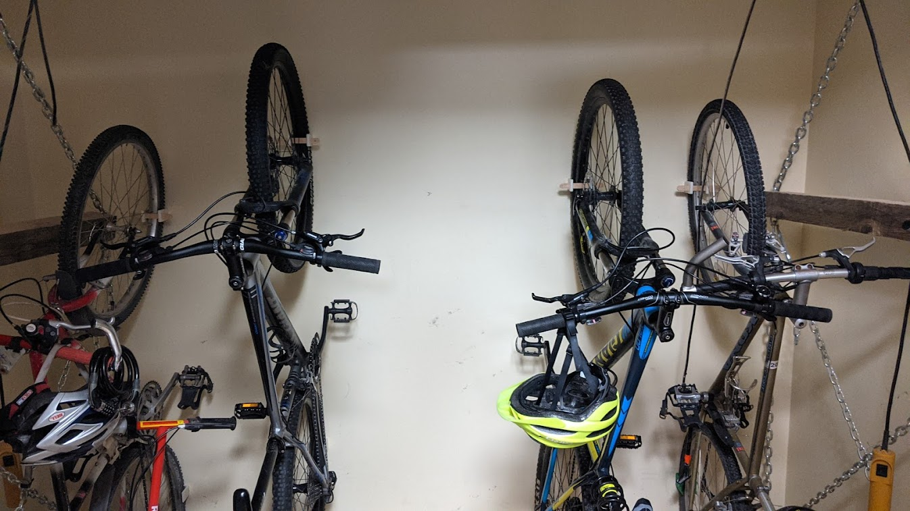
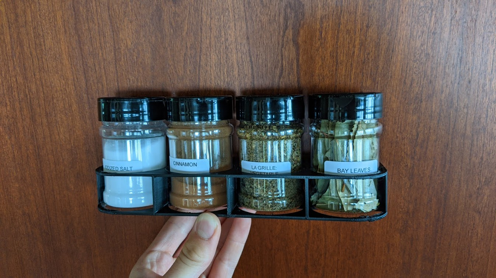
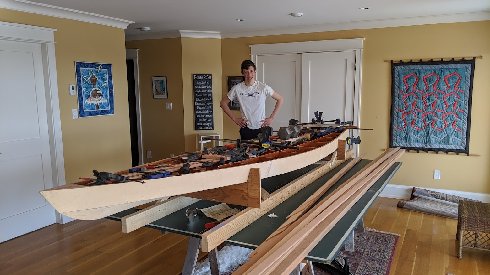
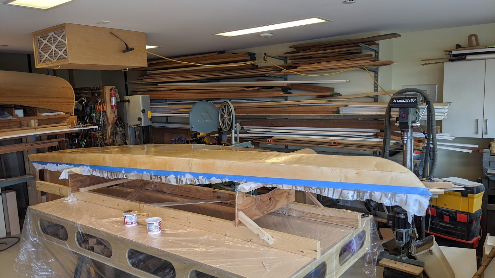
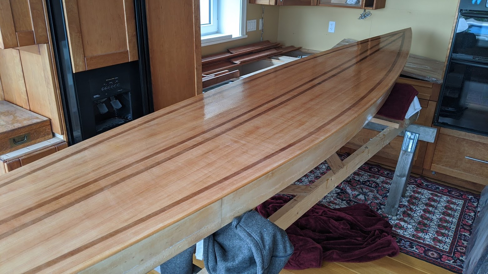
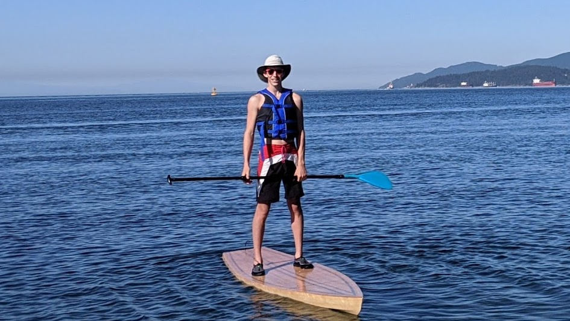
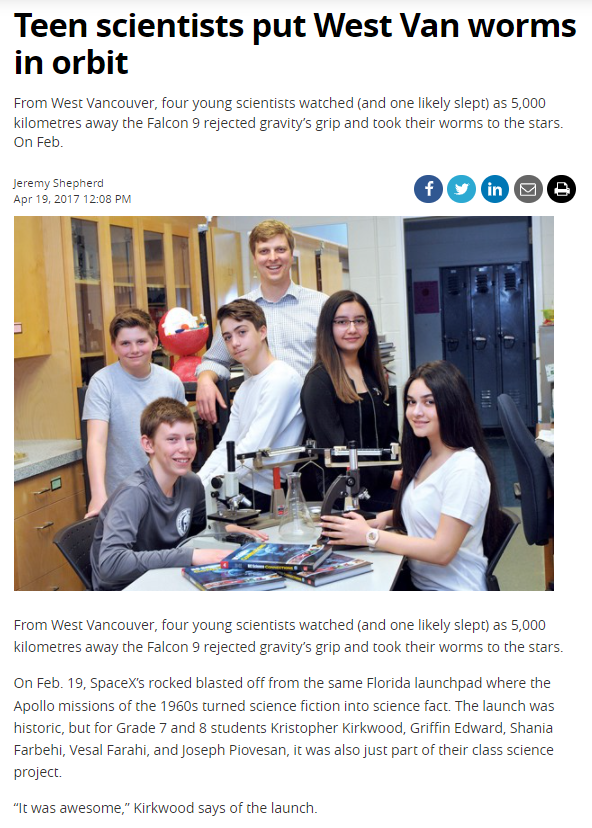
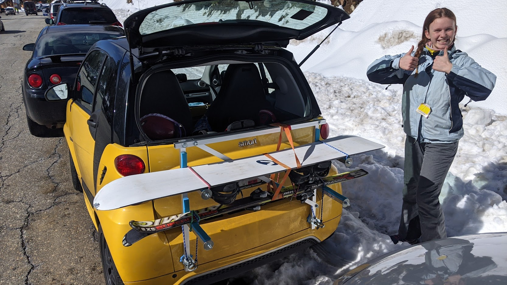

Projects
Welcome to my projects folder. Here you can see a showcase of the things that I have worked on.
UBC Engineering Physics Robot Summer
- Worked in a team of four to design and build a fully autonomous robot which accurately follows a tape track while picking up blocks and avoiding blocks that contain magnets at a high speed.
- Designed and built an Ackerman geometry steering system using laser cut Delrin, 3D printed shaft housings and wheels and a lathed axel.
- Built both the electrical and mechanical components of the block collection and rejection system to pick up blocks while driving at full speed. The collection of the “good blocks” was achieved using a gearing system to connect a DC motor to a custom-made brush which would lift the blocks from the competition surface onto the storage platform of the robot. I designed housings for four Hall effect sensors (red parts in the image below) which would detect when a magnetic “Bomb” would pass under the cars, triggering a response of closing a pair of doors and stopping the pick-up mechanism to avoid picking up the bomb.
- Operated lathes, waterjet and laser cutters, and 3D printers to build custom components for quick integration between mechanical and electrical systems.
- I regularly use CAD and collaborate with others to develop optimal solutions for fuel efficiency. This includes running topology optimization studies for weight reduction, while maximizing strength.


UBC Supermileage
- Member of the powertrain division on the UBC Supermileage team
- Designed and manufactured a motor mount and the universal base plate mount for the team’s electric vehicle
- Used solidworks to design the mounts and generate an assembly of the powertrain
- Manufactured parts using a waterjet cutter
- Tapped holes manually
- I regularly use CAD and collaborate with others to develop optimal solutions for fuel efficiency. This includes running topology optimization studies for weight reduction, while maximizing strength.

3D Printing
I designed and 3D printed wall-mounted bike holders to help with bike organization, and a series of 3D printed holders for a spice rack organization cabinet. I have also designed boxes and recently printed a cell-phone mount for my bike. Through the process of learning to use 3D printers, I learned to use SOLIDWORKS to design parts, Cura to convert the SOLIDWORKS files to a 3D printable file, and Octopi, which is a program that allows me to wirelessly connect my computer to my printer using a Raspberry Pi microprocessor.
 
UBC Physics Olympics
- Designed and conducted experiments to verify gravitational acceleration using the available sensors on a cell phone
- Competed against other schools virtually on March 6, 2021 in a circuit debugging competition
Paddleboard
I built a wooden stand-up paddleboard from scratch using a stitch-and-glue technique. I followed a plan that was provided to me by my high school teacher. This project required me to improvise and solve problems at certain stages when the plan was either inefficient or unclear. I used plywood to make the internal ribs, stringers and hull of the board. I cut cedar strips for the deck and used two different widths and colors to generate a custom pattern. I custom-fitted the angles and curved pieces on the deck and I used a hand plane to ensure that all of the joints were tight and accurate. I used clamps and thin strips of cedar to curve the edge pieces. After extensive sanding with and without power tools, I fiberglassed the board using epoxy and cloth fiberglass. Throughout this process I have learned how to use machinery including planers, jointers, band saws, table saws, mitre saws, drills and sanders which allow me to further express myself creatively and satisfy my desire to build things. I have also learned to use different epoxy resins, and how to thicken epoxy using glass bubbles.
  
Student Spaceflight Experiment Program (SSEP)
In September of 2015 the Student Spaceflight Experiments Program (SSEP), an international program run by the US National Center for Earth and Space Science Education (NCESSE), provided my school district with the opportunity to nominate one student group to create an experiment to be conducted on the International Space Station. To accomplish my goal of designing the winning proposal, I designated roles and responsibilities within my group based on each member's individual preferences and skill set and through this process learned how to effectively appoint roles that play to each individual’s strengths. I developed short-term goals to be completed each week and supported my group members when they were unable to complete their tasks. In addition to the organizational skills I developed while scheduling personal and team due dates, I learned the importance of being reasonable, flexible and supportive. I kept my group members, one of whom was autistic, motivated and focused, by frequently validating their contributions and emphasizing the possibility of our experiment being selected. While creating our proposal and experiment, I learned to contact and interview local experts, review scientific literature, write and revise a professional scientific proposal, and create and conduct an experiment.
My group investigated the possibility of growing composting red-worms in space and this required testing various variables including soil saturation and food supply. After our team won our school and district competitions, the NCESSE committee selected our proposal. We raised funds to travel to the conference in June of 2016 in Washington, DC by securing corporate sponsorship and organizing Freezie sales at school events. Representing Canada, my group presented our proposal to conference attendees and the general public orally through a slideshow and poster presentation at the Smithsonian Air and Space Museum. I learned how professional conferences are run, and how to present in a formal manner. Our experiment was launched into space aboard the SpaceX Falcon 9 rocket in February of 2017 and upon its return I learned how to analyze the results and publish our findings in a formal report. This experience taught me that optimism and hard work can lead to amazing learning opportunities.
Article Published by the North Shore News celebrating the project.
Bike/Ski/Snowboard Rack
I used aluminum extruded square tubes to create a custom ski/snowboard rack for my family's Smart car, which I fasten in the car's towing hook ports. This project required an initial design phase where I planned and drew (by hand) a possible rack configuration, and after consulting my dad, I purchased the aluminum extrusions and used wood/metal tools that I own to build the rack according to my plan. Recently I modified the rack by moving the horizontal pieces (the part the skis fit on to) to turn the rack into a bicycle rack as well. Previously we had to jam all of our ski equipment into the tiny Smart car, however we are now able to drive with the skis secured on the back.
Hovercraft
As a “passion project” in elementary school, I built a leaf blower powered hovercraft using plywood and plastic sheeting. Air holes on the bottom of the craft allowed for the release of air, and a low coefficient of friction between the hovercraft and the ground.
Pop Bottle Launcher
I created a bottle-rocket launcher when I was younger and still use it as a fun experiment to show younger kids. It uses a bicycle pump to pressurize a pop-bottle, and launch it into the air. I use a custom metal "fork" to hold the bottle to the base (the fork surrounds the neck of the bottle), and then once the bottle is pressurized, I pull the fork away, thus allowing the bottle to launch into the air. It is fun to fill the pop bottle with different volumes of water to see how that affects the height of the launched bottle.